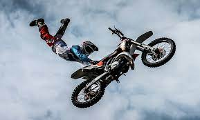
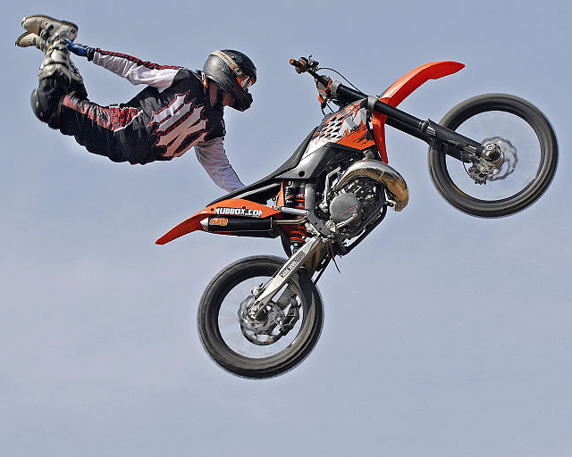

Na História Motocross temos de nos reportar à Inglaterra onde a pacata moda de passear pelo campo começou andando entre árvores e pelo leito dos riachos para acabar gerando competições acirradas, uma corrida de velocidade em circuito fechado, em terreno acidentado, com buracos, inclinações, curvas e obstáculos dos mais diversos tipos, é praticamente uma arte que conta bem a História do Motocross.
O primeiro supercross foi realizada em Los Angeles Coliseum em 1972, Supercross, motocross ajudou a trazer ao público de uma forma muito mais fácil em vez de viajar para fora para uma fazenda rural ou pasto, o esporte chegou às massas os locais do estádio a facilidade de chegar ao evento, estacionamento, assentos agradável, comida, e muito mais. Hoje, o esporte de supercross cresceu de seu início humilde em 1972 no automobilismo segunda maior prestígio nos EUA, superado apenas pela NASCAR no interesse dos fãs.
